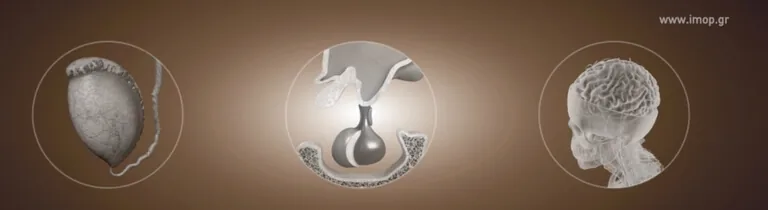
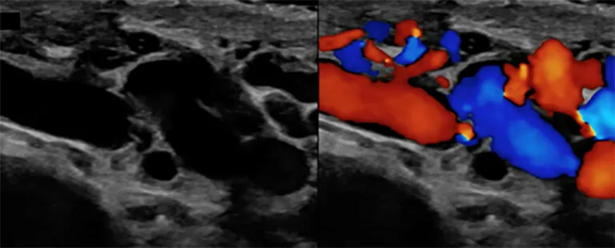
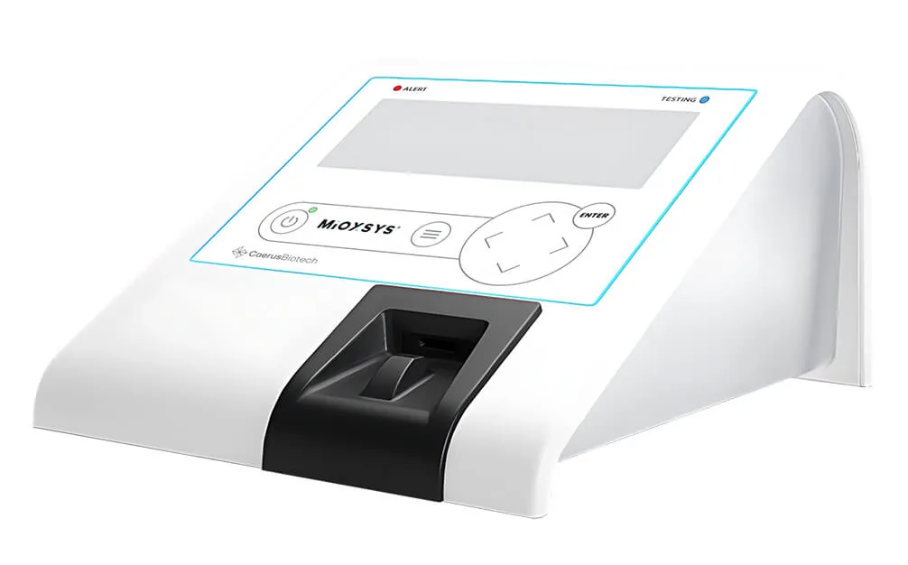

Diagnostic tests
Unfortunately, the vast majority of men with varicocele do not have any symptoms and the problem is only recognized by the inability to have children. Only a small percentage of men have a feeling of “heavy scrotum”, which is aggravated by increased physical activity, prolonged standing or sports.
The diagnostic tests include the medical history, the clinical examination, and 2 spermograms. If there is a problem, the sperm count is repeated and if confirmed, a hormonal test follows (measurement of the hormones FSH, LH, testosterone and prolactin).

The imaging test includes testicular ultrasound and testicular vascular triplex.
Physical Examination
Diagnosis is based primarily on the physician’s physical examination, which is often characterized by the description of a “bag of worms” on palpation. Varicose veins are classified based on severity seen during physical examination, and graded.
Palpable, identified by an increase in intra-abdominal pressure (Valsalva test)
Palpable, recognized in an upright position by the filling of the veins with blood due to gravity
Large varicocele identified in the upright position and by vision alone
Triplex of Testicular Vessels
European Association of Urology (EAU) guidelines recommend the use of triplex to provide additional information and help differentiate radiologically significant varicosities.
The special ultrasound will capture any pathology in the testicles. And the triplex of the vessels will establish the diagnosis and severity of the varicocele. Various classifications of varicocele have been described to characterize both the degree of variceal hernia and the degree of blood reflux which is crucial in early surgical management of the condition.
The experience of the Urologist performing the test is extremely significant.

Sperm Analysis
The sperm analysis or spermogram checks the parameters of the sperm and determines, among other things, the number, motility and morphology of the sperm. It is the “identity” of a man’s fertility and provides valuable information. For the sperm analysis to be reliable, it is important that the man gives the sample to the laboratory.
According to the World Health Organization, a sperm has a high chance of fertilizing the egg with sexual intercourse when it has a sufficient number and motility of spermatozoa and a good morphology:
over 16 million sperm per ml and more than 39 million in total
32% of spermatozoa have propulsive motility to enable the spermatozoa to reach the egg. The propulsive motility of spermatozoa can be vigorous or sluggish.
a sperm sample is normal when >4% of the spermatozoa have a normal morphology.
At the same time as the semen analysis, other tests may be performed such as:
- biochemical semen tests
- sperm DNA testing (DNA fragmentation)
- the control of the acrosome of the sperm
- the assessment of oxidative stress
DNA Fragmentation
It is the separation or breaking of DNA strands into pieces. It can be measured in specialized laboratories and its main unit of measurement is the DNA Fragmentation Index (DFI).
A DFI of 20% or more significantly reduces success rates even in vitro.
Sperm DNA fragmentation (SDF) has adverse effects on both the conception process and the outcome of assisted reproductive techniques (reduced fertilization and clinical pregnancy rates). The classic etiology is increased oxidative stress.
Oxidative Stress
Oxidative stress plays an important role in the etiology of male infertility. In human sperm, oxidative stress results from a homeostatic imbalance between the production of reactive oxygen species (ROS), such as free radicals, and the overall antioxidant capacity to neutralize them. Up to 50% of all cases of male infertility are categorized as idiopathic, and oxidative stress is present in up to 80% of such patients.
In addition to idiopathic infertility, pathologies such as urinary tract infection, chronic prostatitis, varicocele, testicular torsion and cryptorchidism are causes of sperm oxidative stress. Oxidative stress interferes with several critical sperm functions and affects the sperm’s ability to successfully fertilize an egg and create a good quality embryo. Male infertility due to oxidative stress is a treatable condition. The most documented oxidative stress test of high sensitivity/specificity is MiOXSYS® which is performed in specialized Andrological laboratories.
